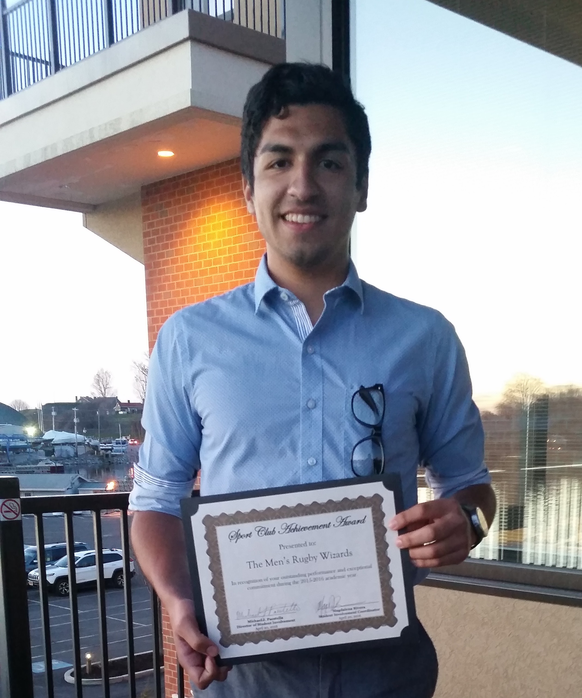

Hi! I'm Nick
I’m a graduate student studying Human-Computer Interaction(HCI) at the State University of New York at Oswego. I was born and raised in New York and I’m an avid Knicks fan🗽. I’ve been playing rugby for Oswego for the last 5+ years and for the last year and ½, I’ve been working as the Graduate Assistant for First Year Programs as well as the Assistant Director of Finance for the Student Association. How you might ask? I have great time management skills👍🏽 so much so that I also moonlight as a bouncer with all my free time!
